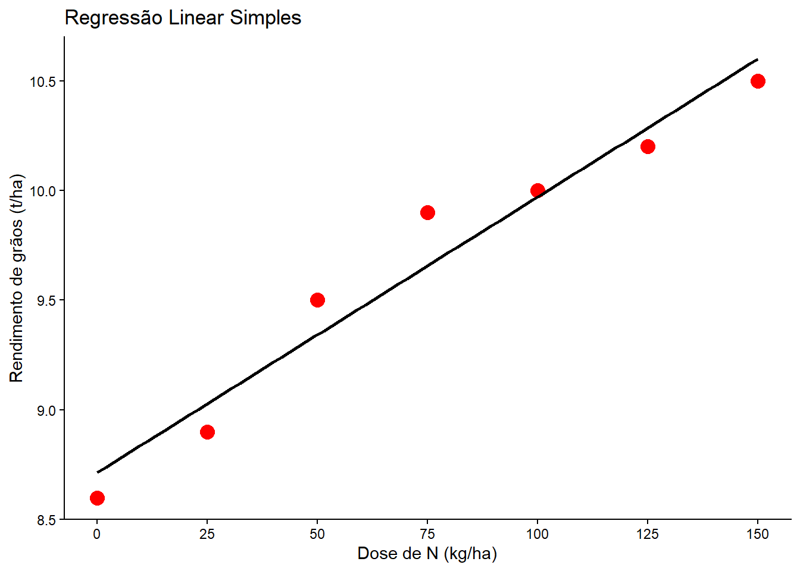
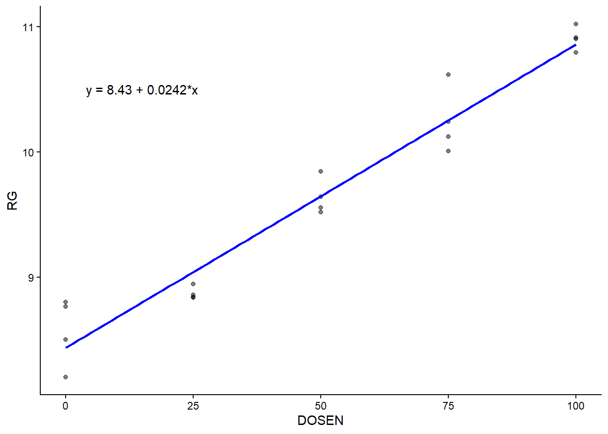
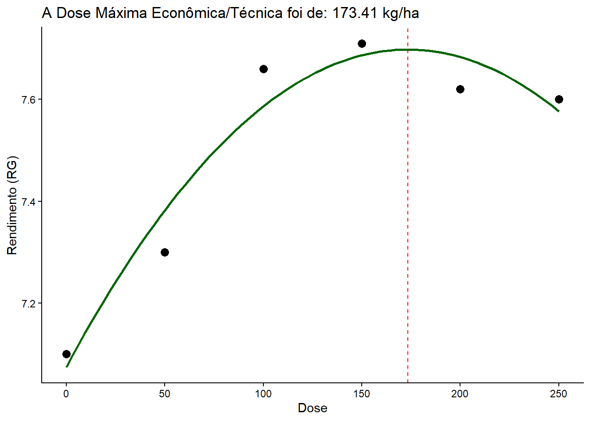
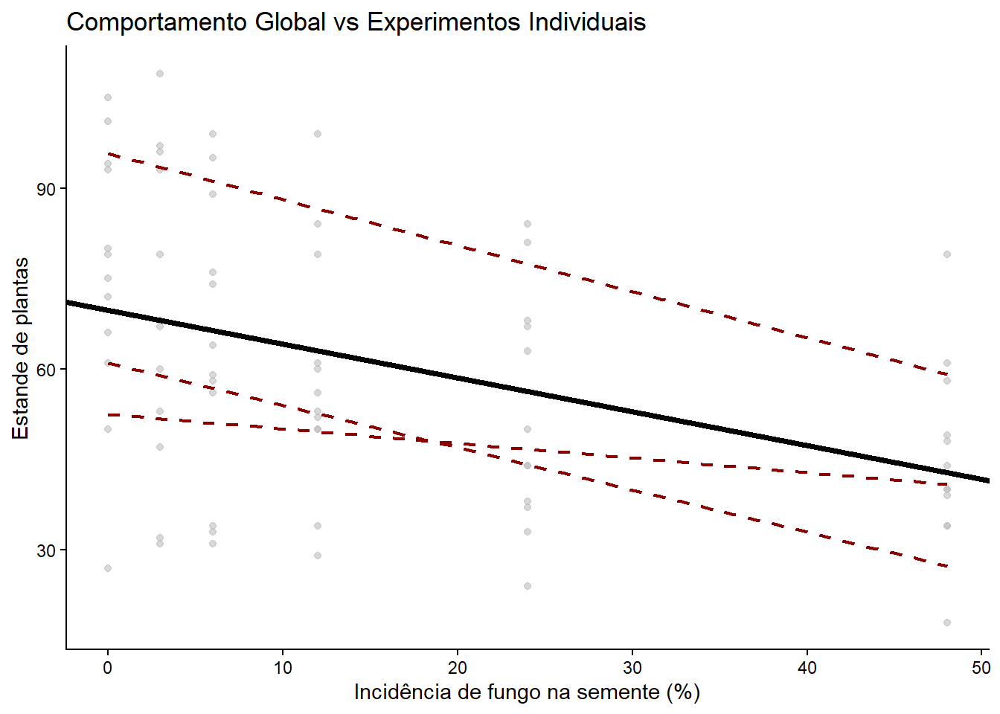
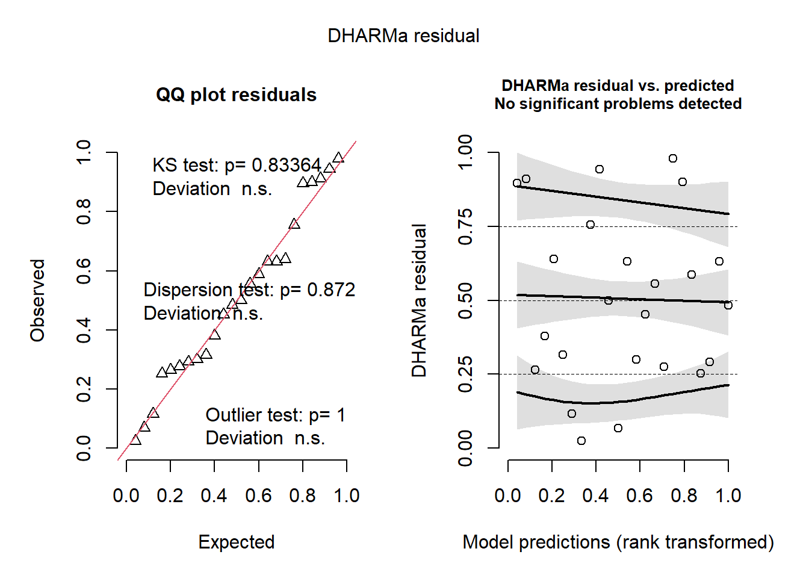

Aula 8 - Regressão Linear, Polinomial e Análise Conjunta de Experimentos
Introdução
Nesta aula, o foco é a análise de variáveis quantitativas contínuas tanto como variável resposta quanto como variável explicativa (fator contínuo). Estudaremos: 1. Regressão Linear Simples: Relação linear constante (causa e efeito) entre uma variável preditora (ex: dose) e uma resposta (ex: rendimento). 2. Regressão Polinomial: Relação não-linear (curvilínea), muito comum em curvas de resposta a diferentes doses para encontrar o ponto de máxima eficiência. 3. Análise Conjunta de Experimentos: Uso de modelos mistos para compilar os resultados de diferentes ensaios ou anos de experimentação, gerando uma inferência global única.
1. Regressão Linear Simples
A regressão linear ajusta a melhor reta aos dados empíricos para prever o valor de \(Y\) a partir de \(X\). A equação clássica é: \(Y = a + bX\), onde \(a\) é o intercepto (valor de Y quando X=0) e \(b\) é a inclinação da reta (taxa de variação a cada unidade de X).
1.1 Criando dados simulados
library(tidyverse)# Simulando um conjunto de dados simples para doses fixasx <-seq(0, 150, by =25)y <-c(8.6, 8.9, 9.5, 9.9, 10, 10.2, 10.5)df <-data.frame(x = x, y = y)# Visualização da dispersão dos pontos e sobreposição da reta de regressãolibrary(ggplot2)ggplot(df, aes(x, y)) +geom_point(size =4, color ="red") +# Adiciona a reta de regressão sem a faixa de intervalo de confiança (se = FALSE)geom_smooth(se =FALSE, method ="lm", color ="black") +scale_x_continuous(breaks = x) +theme_classic() +labs(x ="Dose de N (kg/ha)",y ="Rendimento de grãos (t/ha)",title ="Regressão Linear Simples")

1.2 Ajuste do Modelo Linear no R
O R utiliza a função base lm (Linear Model) para estimar os parâmetros da regressão via mínimos quadrados.
# Ajustando o modelo: y explicado por xm1 <-lm(y ~ x, data = df)# Resumo do modelo (mostra estimativa dos coeficientes, R-quadrado e p-valores)summary(m1)
Call:
lm(formula = y ~ x, data = df)
Residuals:
1 2 3 4 5 6 7
-0.11429 -0.12857 0.15714 0.24286 0.02857 -0.08571 -0.10000
Coefficients:
Estimate Std. Error t value Pr(>|t|)
(Intercept) 8.714286 0.110472 78.88 6.2e-09 ***
x 0.012571 0.001226 10.26 0.000151 ***
---
Signif. codes: 0 '***' 0.001 '**' 0.01 '*' 0.05 '.' 0.1 ' ' 1
Residual standard error: 0.1621 on 5 degrees of freedom
Multiple R-squared: 0.9546, Adjusted R-squared: 0.9456
F-statistic: 105.2 on 1 and 5 DF, p-value: 0.0001513
# Usando os coeficientes da equação para prever o valor de y para uma dose arbitrária de x (ex: 55 kg/ha)x_novo <-55y_pred <- m1$coefficients[1] + (m1$coefficients[2] * x_novo)y_pred
(Intercept)
9.405714
Teoria Estatística: O p-valor associado a \(X\) no quadro do summary indica se a inclinação da reta é estatisticamente diferente de zero (se o aumento em \(X\) afeta o \(Y\)). O parâmetro Multiple R-squared (\(R^2\)) informa a qualidade do ajuste, ou seja, qual a proporção da variabilidade de \(Y\) que é explicada matematicamente pelo eixo \(X\).
Podemos extrair os valores que a reta “acertou” perfeitamente para aquele dataset (preditos) e o que sobrou fora da reta (os resíduos).
# Calculando valores preditos e os resíduos do modelo m1pred <- df |>mutate(predito =predict(m1),residual = y - predito)pred
Vamos aplicar o mesmo conceito a um grande conjunto de dados lido da web.
library(rio)# Importa os dados direto do linkurl <-"https://bit.ly/df_biostat"df_reg <-import(url, sheet ="REG_DEL_DATA", setclass ="tbl")# Gráfico com anotação explícita da equação da reta estimadadf_reg |>ggplot(aes(DOSEN, RG)) +geom_point(alpha =0.5) +geom_smooth(se =FALSE, method ="lm", color ="blue") +# Usar texto manualmente escrito no gráfico após estimar o modeloannotate(geom ="text", x =15, y =10.5, label ="y = 8.43 + 0.0242*x") +theme_classic()

# Ajuste e Análise do modelo m2m2 <-lm(RG ~ DOSEN, data = df_reg)anova(m2) # Testa a redução da variância através do quadro da ANOVA
Analysis of Variance Table
Response: RG
Df Sum Sq Mean Sq F value Pr(>F)
DOSEN 1 14.6676 14.6676 359.44 2.419e-13 ***
Residuals 18 0.7345 0.0408
---
Signif. codes: 0 '***' 0.001 '**' 0.01 '*' 0.05 '.' 0.1 ' ' 1
summary(m2) # Mostra os valores paramétricos exatos (Intercept = 8.43 e DOSEN = 0.0242)
Call:
lm(formula = RG ~ DOSEN, data = df_reg)
Residuals:
Min 1Q Median 3Q Max
-0.24520 -0.14343 -0.03798 0.08990 0.36680
Coefficients:
Estimate Std. Error t value Pr(>|t|)
(Intercept) 8.434550 0.078238 107.81 < 2e-16 ***
DOSEN 0.024222 0.001278 18.96 2.42e-13 ***
---
Signif. codes: 0 '***' 0.001 '**' 0.01 '*' 0.05 '.' 0.1 ' ' 1
Residual standard error: 0.202 on 18 degrees of freedom
Multiple R-squared: 0.9523, Adjusted R-squared: 0.9497
F-statistic: 359.4 on 1 and 18 DF, p-value: 2.419e-13
2. Regressão Polinomial (Quadrática)
Muitas vezes, a relação biológica não é estritamente linear ao infinito. As culturas respondem positivamente a uma dose de fertilizante até um limite, e a partir dali a resposta estabiliza ou cai por efeito fitotóxico. Nesses casos usamos um modelo de curva, como a Regressão Quadrática: \(Y = a + bX + cX^2\).
2.1 Ajuste Linear vs Quadrático
# Criando novos dados simulados com quebra de rendimento nas doses mais altasDOSEN <-c(0, 50, 100, 150, 200, 250)RG <-c(7.1, 7.3, 7.66, 7.71, 7.62, 7.6)df2 <-data.frame(DOSEN = DOSEN, RG = RG)# Comparando os Modelosm3_linear <-lm(RG ~ DOSEN, data = df2)# poly(x, 2) indica grau do polinômio, raw = TRUE expõe os coeficientes não ortogonais naturaism4_quadrat <-lm(RG ~poly(DOSEN, 2, raw =TRUE), data = df2)summary(m3_linear)
Call:
lm(formula = RG ~ DOSEN, data = df2)
Residuals:
1 2 3 4 5 6
-0.14762 -0.04790 0.21181 0.16152 -0.02876 -0.14905
Coefficients:
Estimate Std. Error t value Pr(>|t|)
(Intercept) 7.2476190 0.1243507 58.284 5.19e-07 ***
DOSEN 0.0020057 0.0008214 2.442 0.0711 .
---
Signif. codes: 0 '***' 0.001 '**' 0.01 '*' 0.05 '.' 0.1 ' ' 1
Residual standard error: 0.1718 on 4 degrees of freedom
Multiple R-squared: 0.5985, Adjusted R-squared: 0.4981
F-statistic: 5.962 on 1 and 4 DF, p-value: 0.07108
summary(m4_quadrat)
Call:
lm(formula = RG ~ poly(DOSEN, 2, raw = TRUE), data = df2)
Residuals:
1 2 3 4 5 6
0.02500 -0.08243 0.07371 0.02343 -0.06329 0.02357
Coefficients:
Estimate Std. Error t value Pr(>|t|)
(Intercept) 7.075e+00 7.013e-02 100.882 2.15e-06 ***
poly(DOSEN, 2, raw = TRUE)1 7.184e-03 1.319e-03 5.445 0.0122 *
poly(DOSEN, 2, raw = TRUE)2 -2.071e-05 5.066e-06 -4.089 0.0264 *
---
Signif. codes: 0 '***' 0.001 '**' 0.01 '*' 0.05 '.' 0.1 ' ' 1
Residual standard error: 0.07738 on 3 degrees of freedom
Multiple R-squared: 0.9389, Adjusted R-squared: 0.8982
F-statistic: 23.06 on 2 and 3 DF, p-value: 0.0151
Teoria Estatística: Quando avaliamos o modelo quadrático, olhamos para a significância do termo poly(DOSEN, 2). Se o p-valor for significativo, indica que a inserção da parábola melhorou a precisão da predição frente a uma simples reta.
2.2 Derivando a Dose Máxima
Através do cálculo (primeira derivada igualada a zero), o ponto de cume/vértice de uma parábola ocorre em \(X = -b / (2c)\). Onde \(b\) é o termo linear e \(c\) é o termo quadrático.
# A extração do summary fornece: [1] Intercepto, [2] Termo linear, [3] Termo quadráticob <-coef(m4_quadrat)[2]a <-coef(m4_quadrat)[3] # É o nosso c (termo elevado ao quadrado)# Cálculo matemático do ponto de flexão da curva (Dose Máxima)dose_max <--b / (2* a)dose_max
poly(DOSEN, 2, raw = TRUE)1
173.4138
# Gráfico da curva quadrática explicitando visualmente o ponto de eficiência agronômicadf2 |>ggplot(aes(DOSEN, RG)) +geom_point(size =3) +geom_smooth(method ="lm", se =FALSE, formula = y ~poly(x, 2), color ="darkgreen") +geom_vline(xintercept = dose_max, linetype ="dashed", color ="red") +theme_classic() +labs(title =paste("A Dose Máxima Econômica/Técnica foi de:", round(dose_max, 2), "kg/ha"),x ="Dose", y ="Rendimento (RG)")

3. Análise Conjunta de Experimentos (Modelos Mistos)
Quando reproduzimos o mesmo desenho experimental em diferentes locais ou safras, o ideal não é interpretá-los separadamente, e sim analisar conjuntamente.
3.1 Visualização da Consistência entre Experimentos
O conjunto de dados estande avalia como o estande de plantas reage a incidência do fungo nas sementes em 3 experimentos sucessivos.
library(readxl)estande <-read_excel("dados_diversos.xlsx", "estande")# Plot das observações por experimentoestande |>ggplot(aes(trat, nplants, group = exp)) +geom_point(color ="gray", alpha =0.6) +# A reta teórica principal/média que queremos encontrargeom_abline(intercept =69.74, slope =-0.56, linewidth =1.5, color ="black") +# As retas regressivas particulares de cada ensaio/experimentogeom_smooth(method ="lm", se =FALSE, color ="darkred", linetype ="dashed", size =0.8) +theme_classic() +labs(x ="Incidência de fungo na semente (%)",y ="Estande de plantas",title ="Comportamento Global vs Experimentos Individuais")

3.2 A Abordagem Analítica (Modelos Mistos vs Regressão Simples)
Muitas vezes, a abordagem clássica forçaria a realização de uma transformação para estabilização da variância individual, mas ela não aproveita o peso inferencial de todos os dados somados.
library(DHARMa)# Exemplo: Rodando a regressão para UM ensaio isolado com transformação em raiz quadradaexp1 <- estande |>filter(exp ==1)m11 <-lm(sqrt(nplants) ~ trat + bloco, data = exp1)# Simula e plota os resíduos para avaliação se o modelo serviu bemplot(simulateResiduals(m11))

A Modelagem Mista (lmer) absorve o experimento e o bloco como efeitos inerentemente instáveis (aleatórios), focando em uma predição unificada para o Fator Principal (o tratamento numérico quantitativo).
library(lme4)library(car)# Ajuste do Modelo Misto: # (nplants ~ trat) Fixo# (1 | exp/bloco) Variância do intercepto aleatória para 'bloco' agrupado dentro de 'experimento'm_mix <-lmer(nplants ~ trat + (1| exp/bloco), data = estande)# Tabela completa de componentes de variânciasummary(m_mix)
Linear mixed model fit by REML ['lmerMod']
Formula: nplants ~ trat + (1 | exp/bloco)
Data: estande
REML criterion at convergence: 575.8
Scaled residuals:
Min 1Q Median 3Q Max
-2.21697 -0.63351 0.04292 0.67094 1.92907
Random effects:
Groups Name Variance Std.Dev.
bloco:exp (Intercept) 54.76 7.40
exp (Intercept) 377.43 19.43
Residual 134.99 11.62
Number of obs: 72, groups: bloco:exp, 12; exp, 3
Fixed effects:
Estimate Std. Error t value
(Intercept) 69.74524 11.57191 6.027
trat -0.56869 0.08314 -6.840
Correlation of Fixed Effects:
(Intr)
trat -0.111
# Tabela ANOVA para avaliar a significância p-valor global da covariável "trat"Anova(m_mix)
# Diagnóstico de Resíduos via DHARMa do Modelo Globalplot(simulateResiduals(m_mix))
Interpretação Conclusiva da Análise Conjunta: A redução linear no estande frente ao incremento da doença é uma verdade estatística consistente globalmente p-valor de trat no quadro ANOVA, independente de qual o grau severidade daquele ano experimental, devido ao fato do erro/variância de ambiente ser completamente absorvido na camada aleatória (Random effects). ```